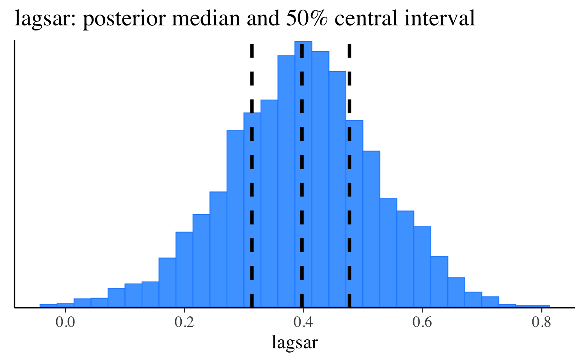
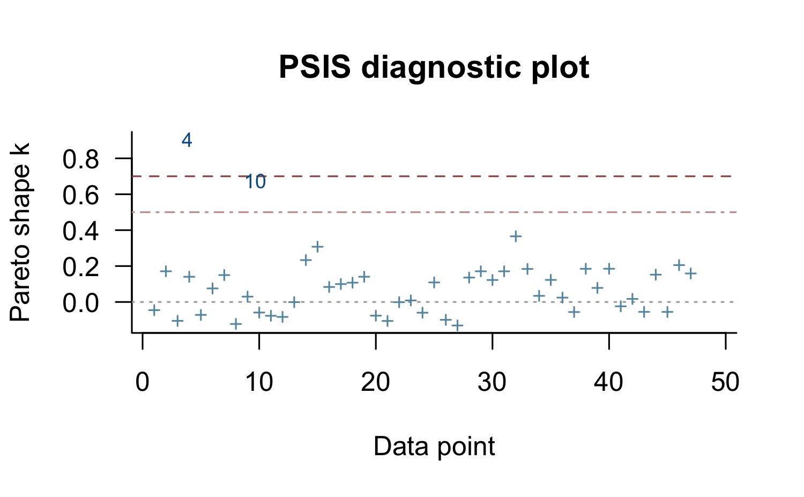
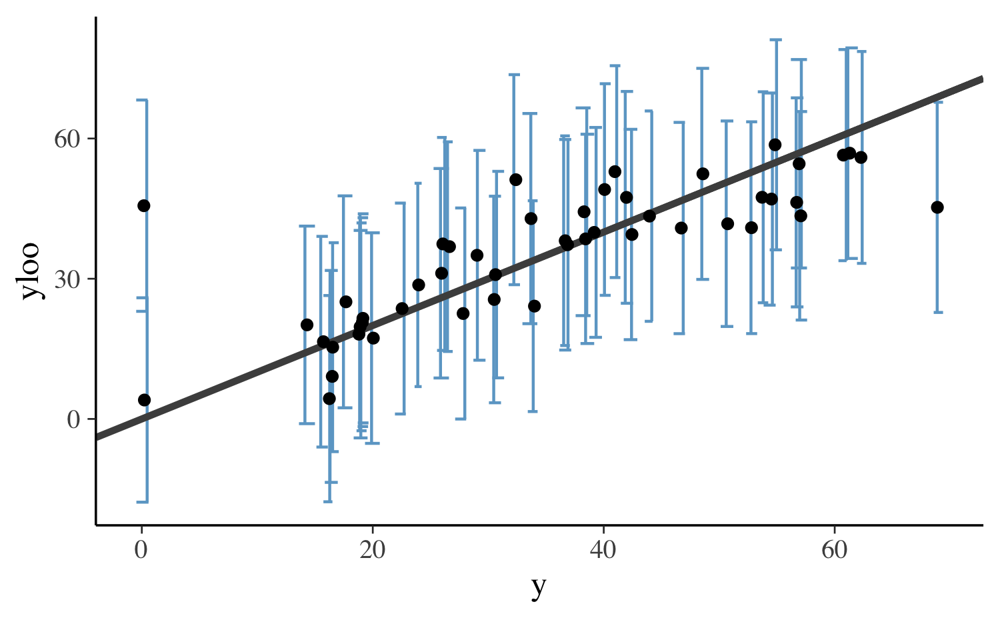
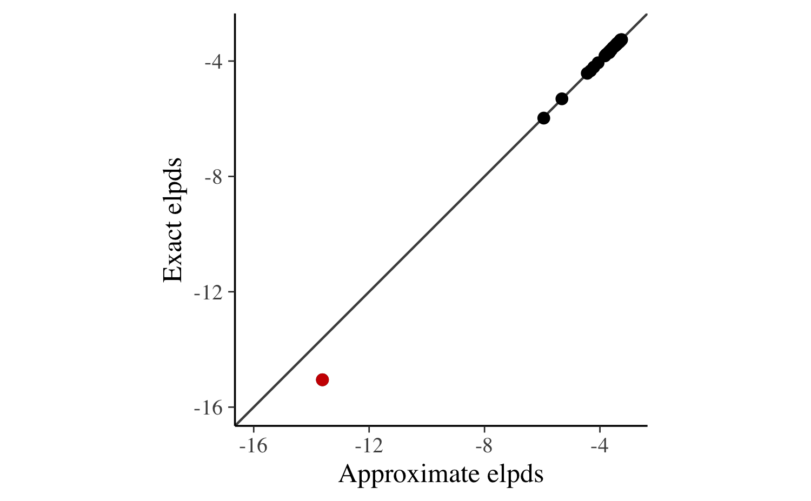

loo2-non-factorizable.RmdWhen computing approximate leave-one-out cross-validation (LOO-CV) after fitting a Bayesian model, the first step is to calculate the pointwise log-likelihood for every response value \(y_i, \: i = 1, \ldots, N\). This is straightforward for factorizable models in which response values are conditionally independent given the model parameters \(\theta\) and the likelihood can be written in the familiar form
\[ p(y \,|\, \theta) = \prod_{i=1}^N p(y_i \,|\, \theta). \]
The function \(p\) will be either a probability density function (PDF) or a probability mass function (PMF) depending on whether we have a continuous or discrete outcome. When \(p(y)\) can be factorized in this way, the conditional pointwise log-likelihood can be obtained easily by computing \(\log p(y_i \,|\, \theta)\) for each \(i\). We then save each of these individual contributions to the log-likelihood rather than simply summing them to obtain the total log-likelihood.
The situation is more complicated for non-factorizable models in which response values are not conditionally independent. When there is residual dependency even after accounting for the model parameters \(\theta\), the conditional pointwise log-likelihood has the general form \(\log p(y_i \,|\, y_{-i}, \theta)\), where \(y_{-i}\) denotes all response values except observation \(i\).
Although computing the pointwise log-likelihood for non-factorizable models is often impossible, there is a large class of multivariate normal models for which an analytical solution is available. These equations were initially derived by Sundararajan and Keerthi (2001) with a focus on the special case of a zero-mean Gaussian process model with prior covariance \(K\) and residual standard deviation \(\sigma\),
\[ y \sim {\mathrm N}(0, \, K+\sigma^2 I), \]
where \(I\) is the identity matrix of appropriate dimension and \(C = K+\sigma^2 I\) is the covariance matrix of the model.
Sundararajan and Keerthi’s results also generalize to the case of an arbitrary invertible covariance matrix \(C\). For such models, the LOO predictive mean and standard deviation can be computed as follows:
\[\begin{align} \mu_{\tilde{y},-i} &= y_i-\bar{c}_{ii}^{-1} g_i \nonumber \\ \sigma_{\tilde{y},-i} &= \sqrt{\bar{c}_{ii}^{-1}}, \end{align}\]
where \(g_i\) and \(\bar{c}_{ii}\) are
\[\begin{align} g_i &= \left[C^{-1} y\right]_i \nonumber \\ \bar{c}_{ii} &= \left[C^{-1}\right]_{ii}. \end{align}\]
Using these results, the log predictive density of the \(i\)th observation is then computed as
\[ \log p(y_i \,|\, y_{-i},\theta) = - \frac{1}{2}\log(2\pi) - \frac{1}{2}\log \sigma^2_{-i} - \frac{1}{2}\frac{(y_i-\mu_{-i})^2}{\sigma^2_{-i}}. \]
Expressing this same equation in terms of \(g_i\) and \(\bar{c}_{ii}\), the log predictive density becomes:
\[ \log p(y_i \,|\, y_{-i},\theta) = - \frac{1}{2}\log(2\pi) + \frac{1}{2}\log \bar{c}_{ii} - \frac{1}{2}\frac{g_i^2}{\bar{c}_{ii}}. \] (Note that Vehtari et al. (2016) has a typo in the corresponding Equation 34.)
From these equations we can now derive a recipe for obtaining the conditional pointwise log-likelihood for all models that can be expressed conditionally in terms of a multivariate normal with invertible covariance matrix \(C\).
The above LOO equations for multivariate normal models are conditional on parameters \(\theta\). Therefore, to obtain the leave-one-out predictive density \(p(y_i \,|\, y_{-i})\) we need to integrate over \(\theta\),
\[ p(y_i\,|\,y_{-i}) = \int p(y_i\,|\,y_{-i}, \theta) \, p(\theta\,|\,y_{-i}) \,d\theta. \]
Here, \(p(\theta\,|\,y_{-i})\) is the leave-one-out posterior distribution for \(\theta\), that is, the posterior distribution for \(\theta\) obtained by fitting the model while holding out the \(i\)th observation.
To avoid the cost of sampling from \(N\) leave-one-out posteriors, it is possible to take the posterior draws \(\theta^{(s)}, \, s=1,\ldots,S\), from the posterior \(p(\theta\,|\,y)\), and then approximate the above integral using integrated importance sampling (Vehtari et al., 2016, Section 3.6.1):
\[ p(y_i\,|\,y_{-i}) \approx \frac{ \sum_{s=1}^S p(y_i\,|\,y_{-i},\,\theta^{(s)}) \,w_i^{(s)}}{ \sum_{s=1}^S w_i^{(s)}}, \]
where \(w_i^{(s)}\) are importance weights. First we compute the raw importance ratios
\[ r_i^{(s)} \propto \frac{1}{p(y_i \,|\, y_{-i}, \,\theta^{(s)})}, \]
and then stabilize them using Pareto smoothed importance sampling (PSIS, Vehtari et al, 2017b) to obtain the weights \(w_i^{(s)}\). The resulting approximation is referred to as PSIS-LOO (Vehtari et al, 2017a).
In order to validate the approximate LOO procedure, and also in order to allow exact computations to be made for a small number of leave-one-out folds for which the Pareto \(k\) diagnostic (Vehtari et al, 2017b) indicates an unstable approximation, we need to consider how we might to do exact leave-one-out CV for a non-factorizable model. In the case of a Gaussian process that has the marginalization property, we could just drop the one row and column of \(C\) corresponding to the held out out observation. This does not hold in general for multivariate normal models, however, and to keep the original prior we may need to maintain the full covariance matrix \(C\) even when one of the observations is left out.
The solution is to model \(y_i\) as a missing observation and estimate it along with all of the other model parameters. For a conditional multivariate normal model, \(\log p(y_i\,|\,y_{-i})\) can be computed as follows. First, we model \(y_i\) as missing and denote the corresponding parameter \(y_i^{\mathrm{mis}}\). Then, we define
\[ y_{\mathrm{mis}(i)} = (y_1, \ldots, y_{i-1}, y_i^{\mathrm{mis}}, y_{i+1}, \ldots, y_N). \] to be the same as the full set of observations \(y\), except replacing \(y_i\) with the parameter \(y_i^{\mathrm{mis}}\).
Second, we compute the LOO predictive mean and standard deviations as above, but replace \(y\) with \(y_{\mathrm{mis}(i)}\) in the computation of \(\mu_{\tilde{y},-i}\):
\[ \mu_{\tilde{y},-i} = y_{{\mathrm{mis}}(i)}-\bar{c}_{ii}^{-1}g_i, \]
where in this case we have
\[ g_i = \left[ C^{-1} y_{\mathrm{mis}(i)} \right]_i. \]
The conditional log predictive density is then computed with the above \(\mu_{\tilde{y},-i}\) and the left out observation \(y_i\):
\[ \log p(y_i\,|\,y_{-i},\theta) = - \frac{1}{2}\log(2\pi) - \frac{1}{2}\log \sigma^2_{\tilde{y},-i} - \frac{1}{2}\frac{(y_i-\mu_{\tilde{y},-i})^2}{\sigma^2_{\tilde{y},-i}}. \]
Finally, the leave-one-out predictive distribution can then be estimated as
\[ p(y_i\,|\,y_{-i}) \approx \sum_{s=1}^S p(y_i\,|\,y_{-i}, \theta_{-i}^{(s)}), \]
where \(\theta_{-i}^{(s)}\) are draws from the posterior distribution \(p(\theta\,|\,y_{\mathrm{mis}(i)})\).
A common non-factorizable multivariate normal model is the simultaneously autoregressive (SAR) model, which is frequently used for spatially correlated data. The lagged SAR model is defined as
\[ y = \rho Wy + \eta + \epsilon \] or equivalently \[ (I - \rho W)y = \eta + \epsilon, \] where \(\rho\) is the spatial correlation parameter and \(W\) is a user-defined weight matrix. The matrix \(W\) has entries \(w_{ii} = 0\) along the diagonal and the off-diagonal entries \(w_{ij}\) are larger when areas \(i\) and \(j\) are closer to each other. In a linear model, the predictor term \(\eta\) is given by \(\eta = X \beta\) with design matrix \(X\) and regression coefficients \(\beta\). However, since the above equation holds for arbitrary \(\eta\), these results are not restricted to linear models.
If we have \(\epsilon \sim {\mathrm N}(0, \,\sigma^2 I)\), it follows that \[ (I - \rho W)y \sim {\mathrm N}(\eta, \sigma^2 I), \] which corresponds to the following log PDF coded in Stan:
/**
* Normal log-pdf for spatially lagged responses
*
* @param y Vector of response values.
* @param mu Mean parameter vector.
* @param sigma Positive scalar residual standard deviation.
* @param rho Positive scalar autoregressive parameter.
* @param W Spatial weight matrix.
*
* @return A scalar to be added to the log posterior.
*/
real normal_lagsar_lpdf(vector y, vector mu, real sigma,
real rho, matrix W) {
int N = rows(y);
real inv_sigma2 = 1 / square(sigma);
matrix[N, N] W_tilde = -rho * W;
vector[N] half_pred;
for (n in 1:N) W_tilde[n,n] += 1;
half_pred = W_tilde * (y - mdivide_left(W_tilde, mu));
return 0.5 * log_determinant(crossprod(W_tilde) * inv_sigma2) -
0.5 * dot_self(half_pred) * inv_sigma2;
}For the purpose of computing LOO-CV, it makes sense to rewrite the SAR model in slightly different form. Conditional on \(\rho\), \(\eta\), and \(\sigma\), if we write
\[\begin{align} y-(I-\rho W)^{-1}\eta &\sim {\mathrm N}(0, \sigma^2(I-\rho W)^{-1}(I-\rho W)^{-T}), \end{align}\]
or more compactly, with \(\widetilde{W}=(I-\rho W)\),
\[\begin{align} y-\widetilde{W}^{-1}\eta &\sim {\mathrm N}(0, \sigma^2(\widetilde{W}^{T}\widetilde{W})^{-1}), \end{align}\]
then this has the same form as the zero mean Gaussian process from above. Accordingly, we can compute the leave-one-out predictive densities with the equations from Sundararajan and Keerthi (2001), replacing \(y\) with \((y-\widetilde{W}^{-1}\eta)\) and taking the covariance matrix \(C\) to be \(\sigma^2(\widetilde{W}^{T}\widetilde{W})^{-1}\).
In order to demonstrate how to carry out the computations implied by these equations, we will first fit a lagged SAR model to data on crime in 49 different neighborhoods of Columbus, Ohio during the year 1980. The data was originally described in Aneslin (1988) and ships with the spdep R package.
In addition to the loo package, for this analysis we will use the brms interface to Stan to generate a Stan program and fit the model, and also the bayesplot and ggplot2 packages for plotting.
library("loo")
library("brms")
library("bayesplot")
library("ggplot2")
color_scheme_set("brightblue")
theme_set(theme_default())
SEED <- 10001
set.seed(SEED) # only sets seed for R (seed for Stan set later)
# loads COL.OLD data frame and COL.nb neighbor list
data(oldcol, package = "spdep")The three variables in the data set relevant to this example are:
CRIME: the number of residential burglaries and vehicle thefts per thousand households in the neighboodHOVAL: housing value in units of $1000 USDINC: household income in units of $1000 USD'data.frame': 49 obs. of 3 variables:
$ CRIME: num 18.802 32.388 38.426 0.178 15.726 ...
$ HOVAL: num 44.6 33.2 37.1 75 80.5 ...
$ INC : num 21.23 4.48 11.34 8.44 19.53 ...We will also use the object COL.nb, which is a list containing information about which neighborhoods border each other. From this list we will be able to construct the weight matrix to used to help account for the spatial dependency among the observations.
A model predicting CRIME from INC and HOVAL, while accounting for the spatial dependency via an SAR structure, can be specified in brms as follows.
fit <- brm(
CRIME ~ INC + HOVAL,
data = COL.OLD,
autocor = cor_lagsar(COL.nb),
chains = 4,
seed = SEED
)The code above fits the model in Stan using a log PDF equivalent to the normal_lagsar_lpdf function we defined above. In the summary output below we see that both higher income and higher housing value predict lower crime rates in the neighborhood. Moreover, there seems to be substantial spatial correlation between adjacent neighborhoods, as indicated by the posterior distribution of the lagsar parameter.
lagsar <- as.matrix(fit, pars = "lagsar")
estimates <- quantile(lagsar, probs = c(0.25, 0.5, 0.75))
mcmc_hist(lagsar) +
vline_at(estimates, linetype = 2, size = 1) +
ggtitle("lagsar: posterior median and 50% central interval")
After fitting the model, the next step is to compute the pointwise log-likelihood values needed for approximate LOO-CV. To do this we will use the recipe laid out in the previous sections.
posterior <- as.data.frame(fit)
y <- fit$data$CRIME
N <- length(y)
S <- nrow(posterior)
loglik <- yloo <- sdloo <- matrix(nrow = S, ncol = N)
for (s in 1:S) {
p <- posterior[s, ]
eta <- p$b_Intercept + p$b_INC * fit$data$INC + p$b_HOVAL * fit$data$HOVAL
W_tilde <- diag(N) - p$lagsar * fit$autocor$W
Cinv <- t(W_tilde) %*% W_tilde / p$sigma^2
g <- Cinv %*% (y - solve(W_tilde, eta))
cbar <- diag(Cinv)
yloo[s, ] <- y - g / cbar
sdloo[s, ] <- sqrt(1 / cbar)
loglik[s, ] <- dnorm(y, yloo[s, ], sdloo[s, ], log = TRUE)
}
# use loo for psis smoothing
log_ratios <- -loglik
psis_result <- psis(log_ratios)The quality of the PSIS-LOO approximation can be investigated graphically by plotting the Pareto-k estimate for each observation. Ideally, they should not exceed \(0.5\), but in practice the algorithm turns out to be robust up to values of \(0.7\) (Vehtari et al, 2017ab). In the plot below, we see that the fourth observation is problematic and so may reduce the accuracy of the LOO-CV approximation.

We can also check that the conditional leave-one-out predictive distribution equations work correctly, for instance, using the last posterior draw:
yloo_sub <- yloo[S, ]
sdloo_sub <- sdloo[S, ]
df <- data.frame(
y = y,
yloo = yloo_sub,
ymin = yloo_sub - sdloo_sub * 2,
ymax = yloo_sub + sdloo_sub * 2
)
ggplot(data=df, aes(x = y, y = yloo, ymin = ymin, ymax = ymax)) +
geom_errorbar(
width = 1,
color = "skyblue3",
position = position_jitter(width = 0.25)
) +
geom_abline(color = "gray30", size = 1.2) +
geom_point()
Finally, we use PSIS-LOO to approximate the expected log predictive density (ELPD) for new data, which we will validate using exact LOO-CV in the upcoming section.
Computed from 4000 by 49 log-likelihood matrix
Estimate SE
elpd_loo -186.6 10.5
p_loo 7.8 4.9
looic 373.2 21.0
------
Monte Carlo SE of elpd_loo is NA.
Pareto k diagnostic values:
Count Pct. Min. n_eff
(-Inf, 0.5] (good) 47 95.9% 1840
(0.5, 0.7] (ok) 1 2.0% 801
(0.7, 1] (bad) 1 2.0% 61
(1, Inf) (very bad) 0 0.0% <NA>
See help('pareto-k-diagnostic') for details.Exact LOO-CV for the above example is somewhat more involved, as we need to re-fit the model \(N\) times and each time model the held-out data point as a parameter. First, we create an empty dummy model that we will update below as we loop over the observations.
# see help("mi", "brms") for details on the mi() usage
fit_dummy <- brm(
CRIME | mi() ~ INC + HOVAL,
data = COL.OLD,
autocor = cor_lagsar(COL.nb),
chains = 0
)Next, we fit the model \(N\) times, each time leaving out a single observation and then computing the log predictive density for that observation. For obvious reasons, this takes much longer than the approximation we computed above, but it is necessary in order to validate the approximate LOO-CV method. Thanks to the PSIS-LOO approximation, in general doing these slow exact computations can be avoided.
S <- 500
res <- vector("list", N)
loglik <- matrix(nrow = S, ncol = N)
for (i in seq_len(N)) {
dat_mi <- COL.OLD
dat_mi$CRIME[i] <- NA
fit_i <- update(fit_dummy, newdata = dat_mi,
# just for vignette
chains = 1, iter = S * 2)
posterior <- as.data.frame(fit_i)
yloo <- sdloo <- rep(NA, S)
for (s in seq_len(S)) {
p <- posterior[s, ]
y_miss_i <- y
y_miss_i[i] <- p$Ymi
eta <- p$b_Intercept + p$b_INC * fit_i$data$INC + p$b_HOVAL * fit_i$data$HOVAL
W_tilde <- diag(N) - p$lagsar * fit_i$autocor$W
Cinv <- t(W_tilde) %*% W_tilde / p$sigma^2
g <- Cinv %*% (y_miss_i - solve(W_tilde, eta))
cbar <- diag(Cinv);
yloo[s] <- y_miss_i[i] - g[i] / cbar[i]
sdloo[s] <- sqrt(1 / cbar[i])
loglik[s, i] <- dnorm(y[i], yloo[s], sdloo[s], log = TRUE)
}
ypred <- rnorm(S, yloo, sdloo)
res[[i]] <- data.frame(y = c(posterior$Ymi, ypred))
res[[i]]$type <- rep(c("pp", "loo"), each = S)
res[[i]]$obs <- i
}
res <- do.call(rbind, res)A first step in the validation of the pointwise predictive density is to compare the distribution of the implied response values for the left-out observation to the distribution of the \(y_i^{\mathrm{mis}}\) posterior-predictive values estimated as part of the model. If the pointwise predictive density is correct, the two distributions should match very closely (up to sampling error). In the plot below, we overlay these two distributions for the first four observations and see that they match very closely (as is the case for all \(49\) observations of in this example).
res_sub <- res[res$obs %in% 1:4, ]
ggplot(res_sub, aes(y, fill = type)) +
geom_density(alpha = 0.6) +
facet_wrap("obs", scales = "fixed", ncol = 4)In the final step, we compute the ELPD based on the exact LOO-CV and compare it to the approximate PSIS-LOO result computed earlier.
log_mean_exp <- function(x) {
# more stable than log(mean(exp(x)))
max_x <- max(x)
max_x + log(sum(exp(x - max_x))) - log(length(x))
}
exact_elpds <- apply(loglik, 2, log_mean_exp)
exact_elpd <- sum(exact_elpds)
round(exact_elpd, 1)[1] -188.6The results of the approximate and exact LOO-CV are similar but not as close as we would expect if there were no problematic observations. We can investigate this issue more closely by plotting the approximate against the exact pointwise ELPD values.
df <- data.frame(
approx_elpd = psis_loo$pointwise[, "elpd_loo"],
exact_elpd = exact_elpds
)
ggplot(df, aes(x = approx_elpd, y = exact_elpd)) +
geom_abline(color = "gray30") +
geom_point(size = 2) +
geom_point(data = df[4, ], size = 2, color = "red3") +
xlab("Approximate elpds") +
ylab("Exact elpds") +
coord_fixed(xlim = c(-16, -3), ylim = c(-16, -3))
In the plot above the fourth data point —the observation flagged as problematic by the PSIS-LOO approximation— is colored in red and is the clear outlier. Otherwise, the correspondence between the exact and approximate values is strong. In fact, summing over the pointwise ELPD values and leaving out the fourth observation yields practically equivalent results for approximate and exact LOO-CV:
without_pt_4 <- c(
approx = sum(psis_loo$pointwise[-4, "elpd_loo"]),
exact = sum(exact_elpds[-4])
)
round(without_pt_4, 2) approx exact
-173.10 -173.08 From this we can conclude that the difference we found when including all observations does not indicate a bug in our implementation of the approximate LOO-CV but rather a violation of its assumptions.
So far, we have specified the models in brms and only used Stan implicitely behind the scenes. This allowed us to focus on the primary purpose of validating approximate LOO-CV for non-factorizable models. However, we would also like to show how everything can be set up in Stan directly. The Stan code brms generates is human readable and so we can use it to learn some of the essential aspects of Stan and the particular model we are implementing. The Stan program below is a slightly modified version of the code extracted via stancode(fit_dummy):
// generated with brms 2.2.0
functions {
/**
* Normal log-pdf for spatially lagged responses
*
* @param y Vector of response values.
* @param mu Mean parameter vector.
* @param sigma Positive scalar residual standard deviation.
* @param rho Positive scalar autoregressive parameter.
* @param W Spatial weight matrix.
*
* @return A scalar to be added to the log posterior.
*/
real normal_lagsar_lpdf(vector y, vector mu, real sigma,
real rho, matrix W) {
int N = rows(y);
real inv_sigma2 = 1 / square(sigma);
matrix[N, N] W_tilde = -rho * W;
vector[N] half_pred;
for (n in 1:N) W_tilde[n, n] += 1;
half_pred = W_tilde * (y - mdivide_left(W_tilde, mu));
return 0.5 * log_determinant(crossprod(W_tilde) * inv_sigma2) -
0.5 * dot_self(half_pred) * inv_sigma2;
}
}
data {
int<lower=1> N; // total number of observations
vector[N] Y; // response variable
int<lower=0> Nmi; // number of missings
int<lower=1> Jmi[Nmi]; // positions of missings
int<lower=1> K; // number of population-level effects
matrix[N, K] X; // population-level design matrix
matrix[N, N] W; // spatial weight matrix
int prior_only; // should the likelihood be ignored?
}
transformed data {
int Kc = K - 1;
matrix[N, K - 1] Xc; // centered version of X
vector[K - 1] means_X; // column means of X before centering
for (i in 2:K) {
means_X[i - 1] = mean(X[, i]);
Xc[, i - 1] = X[, i] - means_X[i - 1];
}
}
parameters {
vector[Nmi] Ymi; // estimated missings
vector[Kc] b; // population-level effects
real temp_Intercept; // temporary intercept
real<lower=0> sigma; // residual SD
real<lower=0,upper=1> lagsar; // SAR parameter
}
transformed parameters {
}
model {
vector[N] Yl = Y;
vector[N] mu = Xc * b + temp_Intercept;
Yl[Jmi] = Ymi;
// priors including all constants
target += student_t_lpdf(temp_Intercept | 3, 34, 17);
target += student_t_lpdf(sigma | 3, 0, 17)
- 1 * student_t_lccdf(0 | 3, 0, 17);
// likelihood including all constants
if (!prior_only) {
target += normal_lagsar_lpdf(Yl | mu, sigma, lagsar, W);
}
}
generated quantities {
// actual population-level intercept
real b_Intercept = temp_Intercept - dot_product(means_X, b);
}Here we want to focus on two aspects of the Stan code. First, because there is no built-in function in Stan that calculates the log-likelihood for the lag-SAR model, we define a new normal_lagsar_lpdf function in the functions block of the Stan program. This is the same function we showed earlier in the vignette and it can be used to compute the log-likelihood in an efficient and numerically stable way. The _lpdf suffix used in the function name informs Stan that this is a log probability density function.
Second, this Stan program nicely illustrates how to set up missing value imputation. Instead of just computing the log-likelihood for the observed responses Y, we define a new variable Yl which is equal to Y if the reponse is observed and equal to Ymi if the response is missing. The latter is in turn defined as a parameter and thus estimated along with all other paramters of the model. More details about missing value imputation in Stan can be found in the Missing Data & Partially Known Parameters section of the Stan manual.
The Stan code extracted from brms is not only helpful when learning Stan, but can also drastically speed up the specification of models that are not support by brms. If brms can fit a model similar but not identical to the desired model, we can let brms generate the Stan program for the similar model and then mold it into the program that implements the model we actually want to fit. Rather than calling stancode(), which requires an existing fitted model object, we recommend using make_stancode() and specifying the save_model argument to write the Stan program to a file. The corresponding data can be prepared with make_standata() and then manually amended if needed. Once the code and data have been edited, they can be passed to RStan’s stan() function via the file and data arguments.
In summary, we have shown how to set up and validate approximate and exact LOO-CV for non-factorizable multivariate normal models using Stan with the brms and loo packages. Although we focused on the particular example of a spatial SAR model, the presented recipe applies more generally to models that can be expressed in terms of a multivariate normal likelihood.
Anselin L. (1988). Spatial econometrics: methods and models. Dordrecht: Kluwer Academic.
Sundararajan S. & Keerthi S. S. (2001). Predictive approaches for choosing hyperparameters in Gaussian processes. Neural Computation, 13(5), 1103–1118.
Vehtari A., Mononen T., Tolvanen V., Sivula T., & Winther O. (2016). Bayesian leave-one-out cross-validation approximations for Gaussian latent variable models. Journal of Machine Learning Research, 17(103), 1–38. Online.
Vehtari A., Gelman A., & Gabry J. (2017a). Practical Bayesian model evaluation using leave-one-out cross-validation and WAIC. Statistics and Computing, 27(5), 1413–1432. :10.1007/s11222-016-9696-4. Online. arXiv preprint arXiv:1507.04544.
Vehtari A., Gelman A., & Gabry J. (2017b). Pareto smoothed importance sampling. arXiv preprint arXiv:1507.02646.